Sobre o Musculo
O biceps braquial é um agrupamento muscular com duas cabeças, a cabeça longa e a cabeça curta. Ele é localizado na parte da frente do braço (entre o ombro e o cotovelo)
Ele faz principalmente a flexão de cotovelo, que é o movimento de dobrar o braço, além de supinar o antebraço, ou seja, girar a palma da mão pra cima. em um treino de biceps voce tambem recruta musculos como o proprio biceps braquial, o braquial, localizado na parte anterior do braco, profundamente ao biceps e braquiorradial, que e o antebraco.
Melhores Exercicios
1. Rosca Direta
Rosca direta é um exercício clássico de musculação, focado no isolamento e fortalecimento dos bíceps braquiais e antebraços, consiste em flexionar os cotovelos elevando uma barra(reta ou w) ou halteres.

2. Rosca Scott
A rosca scott serve para isolar o músculo bíceps braquial, maximizando a hipertrofia e força, com foco especial na porção inferior e no músculo braquial. o apoio dos braços no banco elimina o impulso do corpo, garantindo um movimento controlado e maior eficiência no treino.

3. Rosca no Banco 45º
A rosca 45º é uma das melhores opções pra quem quer mais pico de bíceps e fuigr daquele visual de braço reto. Este exercício trabalha o músculo de um ângulo diferente, trazendo mais alongamento e recrutando fibras que outras exercícios não pegam direito.

Sobre o músculo
O peito, ou grupo muscular do peitoral, é composto principalmente pelo peitoral maior (parte superior/clavicular e inferior/esternal) e peitoral menor. Essenciais para os movimentos de empurrar e fazer a adução do braço. A hipertrofia exige treinos focados com amplitude e controle.
É um músculo superficial e que cobre a parte superior da caixa toráxica, tem um formato de leque grande e triangular e suas fibras estendem-se desde a clavícula, o esterno e as costelas superiores até o úmero.
Melhores Exercícios
1. Supino Inclinado com Halteres
O supino inclinado com halteres serve principalmente para desenvolver a parte superior do peitoral (porção clavicular), aumentando o volume e a definição da região. A inclinação do banco (30° a 45°) transfere o esforço para o peito alto, ombros (deltoide anterior) e tríceps, oferecendo maior amplitude e equilíbrio muscular que a barra.

2. Peck Deck(Voador)
O peck deck serve para isolar, fortalecer e hipertrofiar os músculos do peitoral (maior e menor). é uma máquina de exercício guiado que permite um movimento controlado, sendo excelente para finalizar o treino de peito, aumentar a definição muscular e evitar sobrecarga na coluna
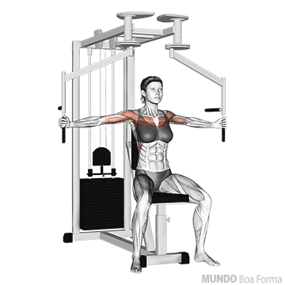
3. Crossover (polia alta)
O crossover na polia trabalha principalmente os músculos do peitoral inferior, com foco na definição e isolamento. Funciona por meio da adução horizontal dos braços e ativa também o deltoide anterior
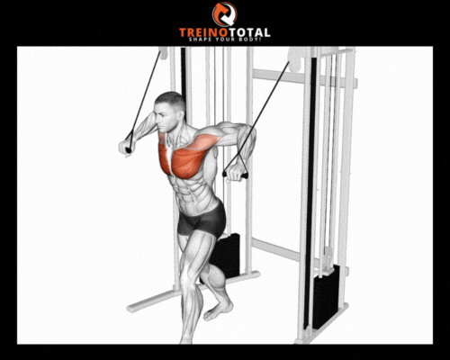
Sobre o músculo
O tríceps, ou tríceps braquial, é o principal músculo da parte de trás do braço e tem um papel essencial em praticamente todos os movimentos de empurrar. é formado por três cabeças, a longa, lateral e medial. A sua principal função é estender o cotovelo.
Melhores exercícios
1. Tríceps testa
Tríceps testa, ou quebra testa como é popularmente chamado, ativa o tríceps com bastante foco na cabeça longa por conta da elevação do braço, é ótimo para ganhar volume em geral. Assim como todos os exercícios para tríceps, ativa as cabeças por meio de uma extensão dos cotovelos acima da cabeça, levando a barra à testa, idealmente deitado em um banco.
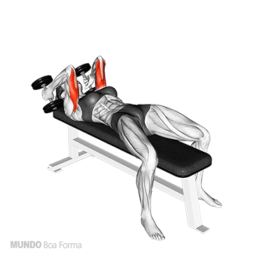
2. Tríceps na corda
O tríceps na corda é feito na polia, puxando a corda para baixo e abrindo no final, ou seja, outra extensão de cotovelo. Ajuda muito na definição e no formato do braço.
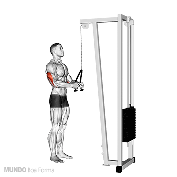
3. Paralela
O exercício da paralela pode ser feito em um banco ou mesmo numa paralela, trabalha o tríceps como um todo, principalmente a porção medial, usando o próprio corpo como carga, sendo excelente para força e massa
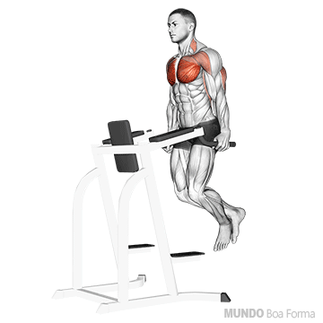
Sobre o músculo
A dorsal se refere ao Latíssimo do dorso, um dos maiores músculos do corpo. o latíssimo do dorso é um músculo grande que cobre boa parte da região média e inferior das costas, que vai da parte torácica e lombar até o braço, no osso do úmero. Este músculo tem alguns funções como puxar o braço para baixo e a extensão do ombro
Diferentes de outros músculos como o bíceps ou tríceps, a dorsal não tem tantas cabeças separadas, porém é separada em duas partes: parte superior e a parte média/inferior
Melhores exercícios
1. Barra fixa
a barra fixa é um exercício de calistenia vertical, com foco na largura das costas e na parte superior. Quanto mais aberta a pegada, mais foco na dorsal, e é um exercício excelente para construir o formato em "V" para as costas
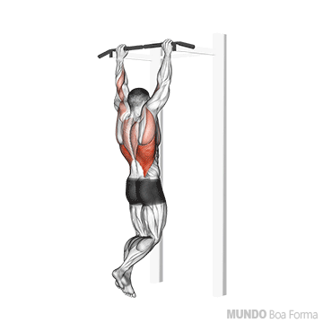
Caso não aguente o peso do próprio corpo para executar a barra fixa, uma segunda opção pode ser a puxada alta

2. Remada baixa na polia com barra
Exercício que recruta os músculos de cima das costas, pegando até mesmo trapézio, ótimo para um volume numa área superior até perto dos ombros
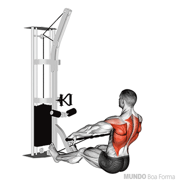
Sobre o músculo
O ombro é um dos grupos musculares mais importantes e complexos do corpo. Em um contexto de academia, normalmente a prioridade são os deltoides
Ele é dividido em três partes: Deltoide anterior, Deltoide lateral e Deltoide posterior. O deltoide anterior fica na parte da frente do ombro e é ativado em movimentos e exercícios de empurrar, como o supino reto.
melhores exercícios
1. Desenvolvimento com halteres
O desenvolvimento com halteres é um exercício multiarticular focado no fortalecimento e hipertorfia dos deltoides (ombros), especialmente a parte anterior e lateral, mas também ativa o tríceps braquial, o trapézio e, em menor grau, o deltoide posterior.

2. Elevação lateral com halteres
A elevação lateral com halteres serve para fortalecer e aumentar a hipertrofia dos ombros, focando especificamente no deltoide lateral. Esse exercício isolado melhora a largura e definição dos ombros (aparência arredondada), aumenta a estabilidade da articulação e corrige a postura.
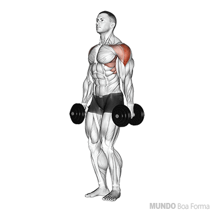
3. Remada alta no cabo
A remada alta é um exercício de musculação focado no fortalecimento e hipertrofia dos ombros (deltoides laterais) e da parte superior das costas/pescoço (trapézio), sendo excelente para melhorar a postura. Também ativa os romboides, bíceps e serrátil anterior, contribuindo para costas mais definidas e estáveis
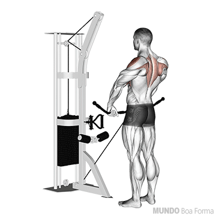
Sobre o músculo
Os músculos abdominais são faixas musculares fortes na parte frontal e lateral do tronco (entre costelas e pelve) que sustentam a coluna, protegem órgãos internos e permitem movimentos como flexão e rotação.
Dividem-se principalmente em reto abdominal, oblíquos (externo/interno), transverso do abdômen e piramidal.
Melhores exercícios
1. Prancha isométrica
A prancha isométrica é um exercício de fortalecimento central (core) altamente eficaz, realizado mantendo o corpo reto e parado, apoiado nos antebraços e pontas dos pés. Trabalha abdômen, glúteos e lombar, melhorando a postura, reduzindo dores nas costas e aumentando a definição muscular sem necessitar de equipamentos
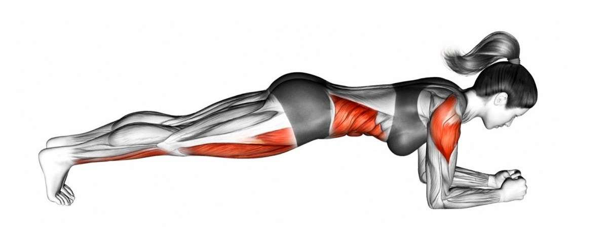
2. Abdominal supra
O abdominal supra é um exercício focado no fortalecimento e definição da parte superior do reto abdominal. Ele envolve uma flexão parcial do tronco, elevando apenas os ombros e escápulas do solo, mantendo a lombar apoiada. É excelente para postura e resistência
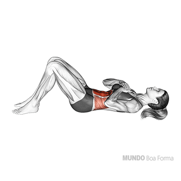
3. Abdominal obliquo
O abdominal oblíquo serve para fortalecer os músculos laterais do abdômen (internos e externos), melhorando a estabilidade do core, a postura e a definição abdominal. Ele é essencial para rotações e inclinações do tronco, além de proteger a coluna lombar e auxiliar na respiração.
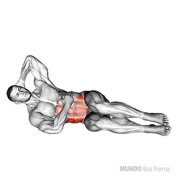